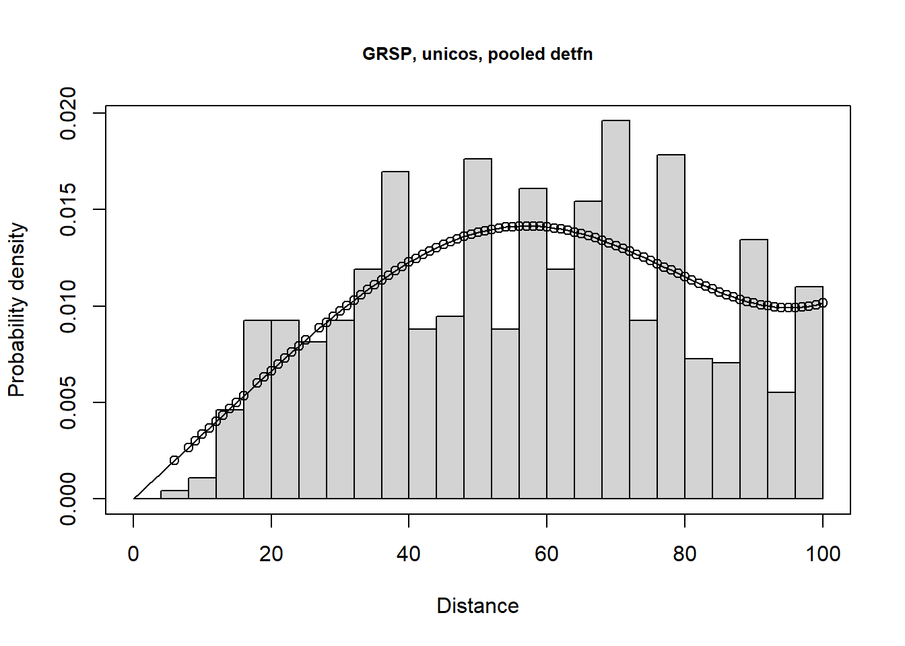
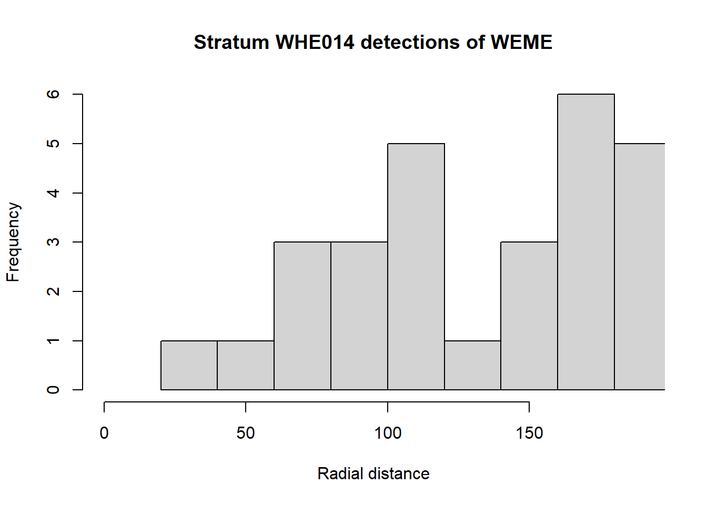

Detections by Region.Label may be a bit sparse, particularly for UPSA. Let’s see how number of detections changes if we aggregate at the level of Group.
I’m unsure about the naming scheme for points stations. It seems most sensible for transects to “belong” to strata, but the numbering system does not seem to follow that. Perhaps using GridPointID as Sample.Label makes more sense? In most instances, it seems there are 12 replicate GridPointID values.
Fitting hazard-rate key function with simple polynomial(4) adjustments
AIC= 10127.116
Hazard-rate key function selected.
summarize_ds_models(weme.hn, weme.uncos, weme.hr)
Model
3 \\texttt{weme.hr}
2 \\texttt{weme.uncos}
1 \\texttt{weme.hn}
Key function Formula
3 Hazard-rate ~1
2 Uniform with cosine adjustment term of order 1 <NA>
1 Half-normal with Hermite polynomial adjustment term of order 4 ~1
C-vM p-value $\\hat{P_a}$ se($\\hat{P_a}$) $\\Delta$AIC
3 0.0446337078 0.4130381 0.017163665 0.00000
2 0.0004631091 0.3490043 0.006997644 37.85355
1 0.0028774891 0.4031840 0.043259167 42.56221
plot(weme.hr, pdf=TRUE, nc=40, main="WEME, HR, pooled detfn")
Fitting half-normal key function with Hermite(4) adjustments
AIC= 6734.482
Fitting half-normal key function with Hermite(4,6) adjustments
Warning in check.mono(result, n.pts = control$mono.points): Detection function
is greater than 1 at some distances
Warning in check.mono(result, n.pts = control$mono.points): Detection function
is greater than 1 at some distances
AIC= 6735.127
Half-normal key function with Hermite(4) adjustments selected.
Fitting uniform key function with cosine(1) adjustments
AIC= 6755.077
Fitting uniform key function with cosine(1,2) adjustments
Warning in check.mono(result, n.pts = control$mono.points): Detection function
is greater than 1 at some distances
Warning in check.mono(result, n.pts = control$mono.points): Detection function
is greater than 1 at some distances
AIC= 6725.678
Fitting uniform key function with cosine(1,2,3) adjustments
** Warning: Maximum probability of detection is greater than one: invalid model fitted **
** Warning: Maximum probability of detection is greater than one: invalid model fitted **
** Warning: Maximum probability of detection is greater than one: invalid model fitted **
Warning in check.mono(result, n.pts = control$mono.points): Detection function
is not weakly monotonic!
Warning in check.mono(result, n.pts = control$mono.points): Detection function
is not strictly monotonic!
Warning in check.mono(result, n.pts = control$mono.points): Detection function
is greater than 1 at some distances
Warning in check.mono(result, n.pts = control$mono.points): Detection function
is not weakly monotonic!
Warning in check.mono(result, n.pts = control$mono.points): Detection function
is not strictly monotonic!
Warning in check.mono(result, n.pts = control$mono.points): Detection function
is greater than 1 at some distances
AIC= 6723.171
Fitting uniform key function with cosine(1,2,3,4) adjustments
Warning in check.mono(result, n.pts = control$mono.points): Detection function
is not strictly monotonic!
Warning in check.mono(result, n.pts = control$mono.points): Detection function
is not strictly monotonic!
AIC= 6715.747
Fitting uniform key function with cosine(1,2,3,4,5) adjustments
Warning in check.mono(result, n.pts = control$mono.points): Detection function
is not strictly monotonic!
Warning in check.mono(result, n.pts = control$mono.points): Detection function
is not strictly monotonic!
AIC= 6716.003
Uniform key function with cosine(1,2,3,4) adjustments selected.
Warning in mrds::check.mono(model, n.pts = 10): Detection function is not
strictly monotonic!
Fitting hazard-rate key function with simple polynomial(4) adjustments
AIC= 10190.153
Hazard-rate key function selected.
summarize_ds_models(grsp.hn, grsp.uncos, grsp.hr)
Model Key function
2 \\texttt{grsp.uncos} Uniform with cosine adjustment terms of order 1,2
3 \\texttt{grsp.hr} Hazard-rate
1 \\texttt{grsp.hn} Half-normal
Formula C-vM p-value $\\hat{P_a}$ se($\\hat{P_a}$) $\\Delta$AIC
2 <NA> 0.2498221 0.5978788 0.05379185 0.000000
3 ~1 0.2614903 0.6271652 0.03066799 2.976262
1 ~1 0.2182570 0.5401211 0.02297043 3.196061
plot(grsp.uncos, pdf=TRUE, nc=25, main="GRSP, unicos, pooled detfn")

5 Constant detectability across strata?
Clearly there are insufficient detections within strata to fit stratum-specific detection functions. However, as shown in Rexstad et al. (2023), bias will result from using a pooled detection function to estimate density at the stratum level if detectability differs between strata.
The defensible way to estimate stratum-specific detection probabilities with small stratum-specific detections is to use stratum as a covariate. This may not work for the large number of strata we have here. The hazard rate model was preferred for two of the three species and it was second-preferred for the GRSP, so attempt covariate modelling using hazard rate as key function.
There are convergence problems with the meadowlark data when using stratum as a covariate
Contrast models with and without Region.Label covariate for each species to provide an evidence-based assessment of constant detectability across strata.
The plot of the probability density functions at the stratum level indicates one stratum with a very different detection function shape compared to the rest of the strata (WHE014). This may explain the convergence challenge. That stratum might be a candidate for exclusion.
hist(weme$distance[weme$Region.Label=="WHE014"], xlim=c(0,190), nc=10,xlab="Radial distance", main="Stratum WHE014 detections of WEME")

Note the SE of the stratum-\(\hat{\beta}\) associated with stratum WHE014 7.2813986^{4}
Rexstad, E., Buckland, S., Marshall, L., & Borchers, D. (2023). Pooling robustness in distance sampling: Avoiding bias when there is unmodelled heterogeneity. Ecology and Evolution, 13(1), e9684. https://doi.org/10.1002/ece3.9684